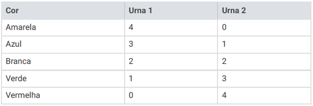

(Enem/2012) Em um jogo há duas urnas com dez bolas de mesmo tamanho em cada urna. A tabela a seguir indica as quantidades de bolas de cada cor em cada urna.

Uma jogada consiste em:
1.º: o jogador apresenta um palpite sobre a cor da bola que será retirada por ele da urna 2
2.º: ele retira, aleatoriamente, uma bola da urna 1 e a coloca na urna 2, misturando-a com as que lá estão
3.º: em seguida ele retira, também aleatoriamente, uma bola da urna 2
4.º: se a cor da última bola retirada for a mesma do palpite inicial, ele ganha o jogo
Qual cor deve ser escolhida pelo jogador para que ele tenha a maior probabilidade de ganhar?